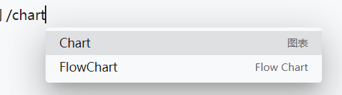
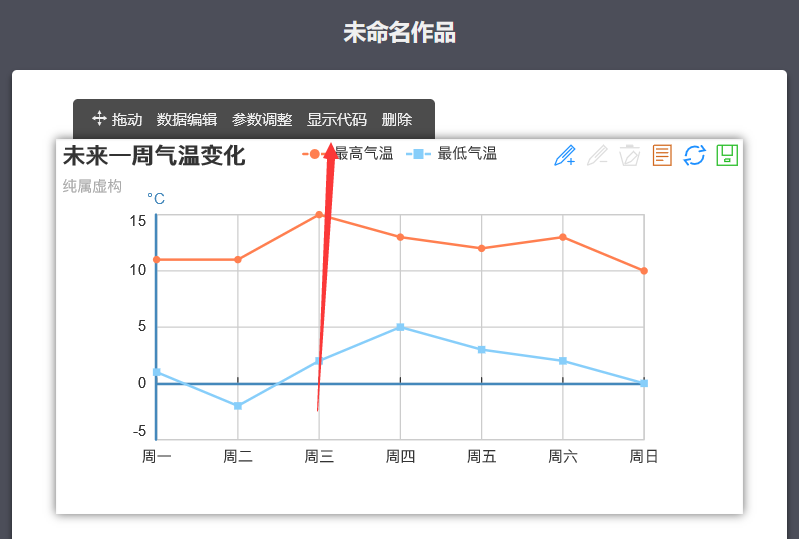
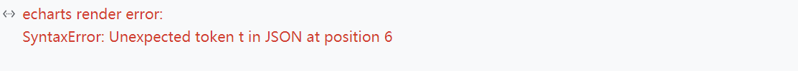

思源图表小白教程
思源内置了有 echarts 图表的功能，但估计不是程序员的都不会使用，特此教学。
问：怎么在思源内插入图表?
答：在思源内输入 /chart 可以看到右图这样菜单，选择第一项即可

图表选项
这实际上是插入了一个代码块，图表所需要的代码是一段 JSON .例如下面这段 JSON
json
{
"xAxis": {
"type": "category",
"boundaryGap": false,
"data": [
"Mon", "Tue", "Wed", "Thu", "Fri", "Sat", "Sun"
]
},
"yAxis": {
"type": "value"
},
"series": [
{
"data": [ 820, 932, 901, 934, 1290, 1330, 1320 ],
"type": "line",
"areaStyle": {}
}
]
}
上面这段 JSON 代码 echarts 渲染出来的效果如下
问：好像很复杂的样子，不懂 JSON
答：不要担心这是小白教程，感谢 百度图说 https://tushuo.baidu.com/ 它提供了一个在线编辑图表并且可以导出数据的功能 （虽然我很不喜欢百度，但不得不说类似于 百度脑图还有这个产品 很不错）
 百度图说页面预览
百度图说页面预览点击右侧图表上方会弹出一个工具栏，再点击显示代码

显示工具栏的图表
 显示代码
显示代码直接复制该代码到思源的图表块中试试，很遗憾会报错如下

该代码无法序列化为 json
这是因为他所提供的代码虽然看起来很像 JSON 但实际上是 js
下面的 挂件块 run-code 中的代码提供了一个简单的从 js 转换到 json 的功能 （这个挂件块可能加载有点慢，耐心等待）

我们将之前复制的 js 代码粘贴到上方挂件块下面渲染出来的文本框内，流程如下图

然后将上面点击复制后得到的 JSON 代码填入思源图表内应当可以得到类似下表这样的显示了
教程完毕🎉
有缘再见